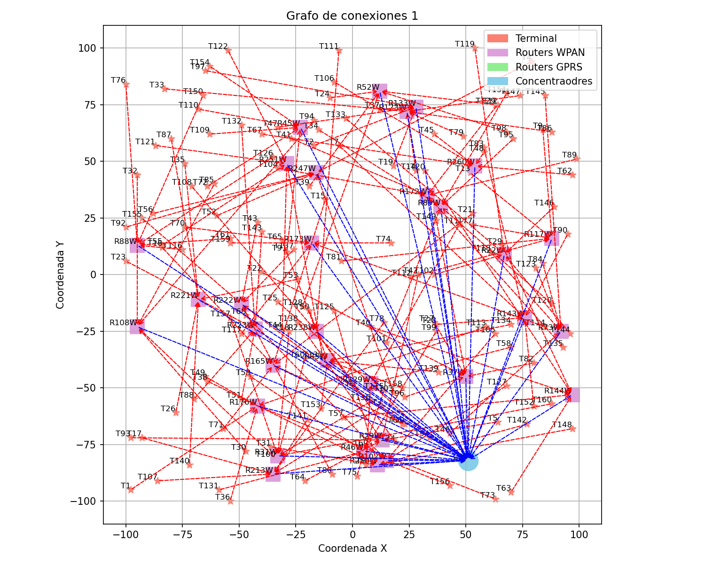
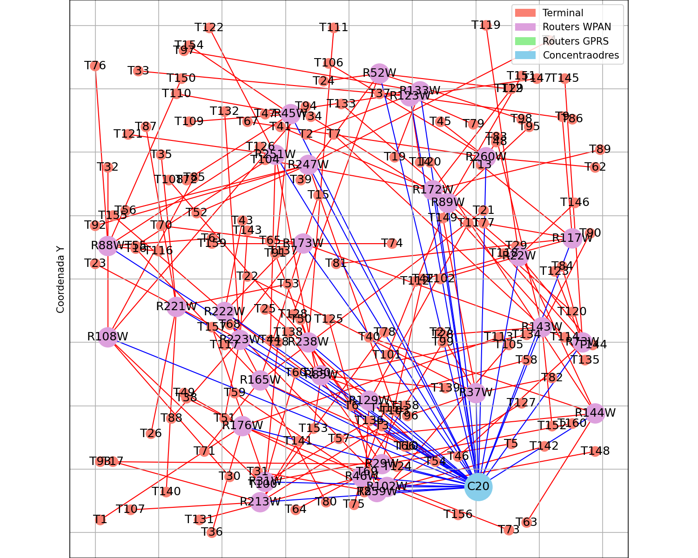

Instrucciones de Uso
Bienvenido al informe de la red de contadores. En esta página, encontrarás visualizaciones detalladas y tablas informativas sobre las conexiones y componentes de la red.
- Visualizaciones de la Red: En la parte superior, verás imágenes que muestran la estructura y conexiones de la red. Haz clic en ellas si quieres verlas con detalle.
- Tablas de Conexiones: Más abajo, encontrarás tablas detalladas con información específica sobre cada tipo de conexión y dispositivo en la red.
- Si haces clic en el título de tabla. Se mostrará un esquema de las conexiones o dispositivos que indica cada título.
- Si haces clic en una fila de alguna tabla. Se mostrará un resumen de las posibles conexiones disponibles para ese dispositivo, y la que finalmente se creó. En el caso de los dispositivos, si haces clic sobre su fila, podrás ver en detalle la ubicació
Explora las secciones para obtener mayor detalle de la solución propuesta.
Solución óptima. Coste total infraestructura = 425.0


| Conexiones | Ud. |
|---|
| Term-RWPAN | 5 |
| Term-RGPRS | 6 |
| RWPAN-Conc. | 0 |
| RWPAN-RWPAN | 0 |
| RWPAN-RGPRS | 1 |
| Dispositivo | Ud. |
|---|
| Nº Term. | 11 |
| Nº RWPAN | 1 |
| Nº RGPRS | 1 |
| Nº Conc. | 0 |
| Terminal | R - WPAN | Valor |
|---|
| T2 | R4 | 1.0 |
| T7 | R4 | 1.0 |
| T9 | R4 | 1.0 |
| T11 | R4 | 1.0 |
| T12 | R4 | 1.0 |
| Terminal | R - GPRS | Valor |
|---|
| T3 | R15 | 1.0 |
| T4 | R15 | 1.0 |
| T5 | R15 | 1.0 |
| T6 | R15 | 1.0 |
| T8 | R15 | 1.0 |
| T10 | R15 | 1.0 |
| R - WPAN | R - GPRS | Valor |
|---|
| R4 | R15 | 1.0 |